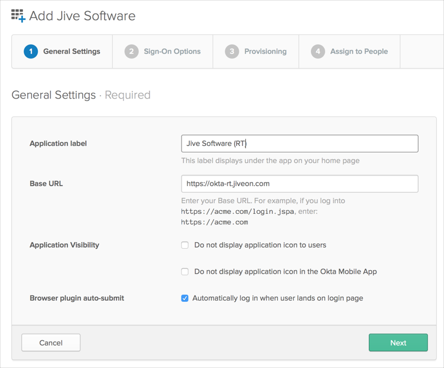

This guide provides the steps required to configure Provisioning for Jive Software.
Notes:
Provisioning Features are supported for Jive 6.0 and above.
The following provisioning features are supported:
Import New Users
Import Profile Updates
Push New Users
Push Profile Updates
Push Password Updates
Push User Deactivation
Reactivate Users
Push Groups
To enable Provisioning Features, you'll need a Base URL to be set correctly on the General tab of the Jive app, and will also need valid Jive Admin credentials.

Configure your Provisioning settings for Jive Software as follows:
Check the Enable provisioning features box.
Under API Credentials enter your Jive Admin User Name and Admin Password:

Click Test API Credentials. If your credentials are valid, you’ll see a success message:
Scroll down and enable the Provisioning Features you want to use for this app:
Click Next.
You can now assign people to the app, if needed.
Click Done to complete the Jive Software app configuration.
The only fields available for Provisioning are the following:
Username
Status
isFederated
First name
Last name
Email (work primary)
Phone (mobile)